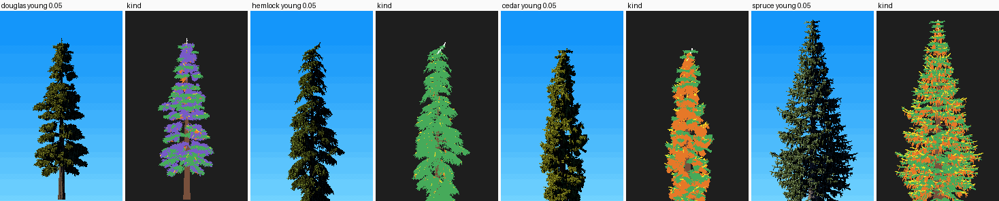
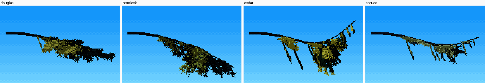
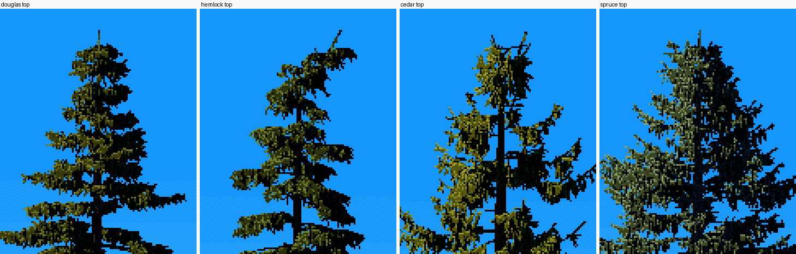

3. Grow the four species from spray elements
Back to the tutorials. Code: grow.py (SP, AGE, grow, _limb) and foliage_fast.py, in ~/work/pixelart-studies/elements/conifers/.
The critic's verdict on the forms was "naturalist-grade: a 70 m tree is a different silhouette, not a scaled sapling". Most of that came from reading, not code. So this page starts with what to read.
What each species is, in a sentence you can build from
I took these from the photos in refs/ and from the naturalist desk's ~/work/naturalist/plants/02-trees.md and 05-old-growth.md. Read those guides before you draw a line.
| species | the silhouette | the spray | what gives it away at 100 m |
|---|---|---|---|
| western hemlock | slender, drooping limbs; crown carried low (shade-tolerant) | flat lacy fronds arcing down at their tips | "every hemlock's tip nods over like a bent fishing rod" |
| western redcedar | limbs "droop then sweep up at the tips in a J"; old trees have multiple leaders and dead silver spikes | hanging flat fans, curtains of scale-leaf sprays | the flared, fluted red base; the candelabra top |
| Sitka spruce | open, long horizontal limbs upturned at the tips; broad cone | stiff short needles on top, pendulous branchlets hanging under the limbs | curtains under long limbs; blue-green |
| Douglas-fir | young: a full cone; mature: long clear bole, crown in the top third to half; old: "often only the top 10 to 20 m of a 60 to 70 m tree", flat, broken top | needles all round the twig, "bottle-brush" | the pillar; the ragged top |
And the heights: mature 40–60 m, old 60–75 m. My first trees were a third of that, and nothing else I did would have made them look like these forests.
Limbs: three terms and a fan
A limb is a curve s ∈ [0, 1] from the stem. Its height is the sum of an initial angle, gravity sag, and an upturn at the tip (from grow._limb):
rise = np.sin(ang) * s * L
sag = sp.droop * L * s ** 2 * (1 - 0.3 * t) * (1.25 if age in ("old", "mature") else 1)
up = sp.tip_upturn * L * np.clip(s - 0.5, 0, 1) ** 2 * 3.2 # cedar's J-hook: 0.55; hemlock 0.04
horiz = np.cos(ang) * s * L
pts = p0 + horiz[:, None] * d + UP * (rise - sag + up)[:, None] + wob * s[:, None]
The angle depends on the limb's height t in the crown: upswept near the top, drooping near the base.
ang = sp.base_angle + sp.top_upsweep * max(0, t - 0.55) * 2.2 - sp.low_droop * max(0, 0.5 - t) * 2
Mature and old limbs fan: fans × AGE[age]["fan"] secondary branches leave each limb at fan_angle to alternate sides. That's what turns a tier from a line into a flat shelf. A fanned limb then carries its own foliage mostly toward its tip (s0 = max(s0, 0.3)), so its children do the filling.
Spray elements
Every limb carries anchors every spacing metres along its foliated part. Each anchor hangs one element per side, chosen by the species weights:
- frond: a rachis arcing down (
frond_droop) with alternating pinnae (pinna × length); - strand:
strand_fanpendant lines hanging from the anchor; - brush: 3–5 short needled twigs splayed all round the anchor;
- spur: the needled outer 35% of the limb itself (how-to 1).
Element length falls off toward the limb tip (wedge), so tiers end in points rather than blobs:
xx = (us - s0) / max(1 - s0, 1e-3)
taper = (np.clip(1 - xx, 0, 1) ** sp.wedge * 0.9 + 0.18) * elscale # long sprays inboard, short at the tip

Young trees at 0.05 m/px, and each foliage pixel coloured by the element that drew it: fronds green, strands orange, brush purple, spurs yellow, leader white. Douglas-fir is brush over fronds; hemlock is almost all fronds; cedar is curtains of strands with fronds at the upturned tips; Sitka is fronds on top with strands hanging under, and spurs at the edge.
The weights, from grow.SP:
"hemlock": Sp(..., frond_w=1.0, frond_len=0.45, frond_droop=0.7, pinna=0.3, strand_w=0.2, strand_len=0.15,
droop=0.32, low_droop=0.45, leader_nod=0.05, needle=0.016, ...),
"cedar": Sp(..., frond_w=0.35, strand_w=1.0, strand_len=0.4, strand_fan=3, tip_upturn=0.55,
base_angle=-0.35, buttress=0.9, flutes=7, candelabra=0.8, spike=0.7, needle=0.03, ...),
"spruce": Sp(..., frond_w=0.5, frond_len=0.3, frond_droop=0.15, strand_w=0.8, strand_len=0.25,
whorled=True, per_whorl=(5, 7), rmax_frac=0.27, tip_upturn=0.35, needle=0.022, ...),
"douglas": Sp(..., brush_w=0.6, brush_len=0.22, frond_w=0.6, strand_w=0.3, whorled=True, per_whorl=(3, 5),
crown_ratio=0.55, needle=0.028, ...),
A spray is an area: the needle fill
At 2 cm/px my first limbs were stick drawings. A spray drawn as its skeleton is a wire model:

Needles have width. Where a spray's leafy half-width (needle, 1.6–3 cm by species) is over a pixel, each element is filled with parallel copies of its points, offset across the spray and a little down (foliage_fast._fill):
if sp.needle >= step * 0.9: # step: point spacing, 0.45 px in metres
k = int(sp.needle / step)
perp = _nrm(np.cross(D, N if kind == 0 else (Rp + 0.3 * UP)))
for j in range(1, k + 1):
for sg in (-1, 1):
off = perp * (sg * j * step) - UP * (0.35 * j * step) + D * (0.4 * j * step)
# ... append P + off, with the stroke direction splayed outward

One limb of each species at 2 cm/px, the final painter: Douglas-fir brush, hemlock lace, cedar's J with hanging fans, Sitka's long limb with pendant branchlets.
The top of each tree
The hemlock's nod is five lines on the stem (grow.grow):
if sp.leader_nod > 0:
tl = sp.leader_nod * H * (1.3 if age in ("young", "sapling") else 1.0)
k = ys > H - tl
u = (ys[k] - (H - tl)) / tl
trunk[k, 0] += (u ** 2) * tl * 0.8 # bends over...
trunk[k, 1] -= (u ** 2.2) * tl * 0.45 # ...and down
Old cedars grow a candelabra of 2–4 reiterated leaders off their upper limbs, each a two-segment stem with its own small crown; 45% are dead. Old trees of every species may lose the top of the stem to a dead spike (spike: cedar 0.7, Douglas-fir 0.15). Dead wood is drawn silver, and never thinner than about 1.5 px, or it vanishes.

Mature tops at 0.08 m/px: Douglas-fir's upswept leader, hemlock's nod, cedar's upturned sprays, Sitka's stiff spire.
Ages
The age table carries height, crown ratio, irregularity, dead lower limbs, crown gaps, girth, fan count and element size (grow.AGE):
"sapling": dict(H=2.5, cr=0.95, irr=0.1, dead=0.0, gaps=0.0, girth=1.8, fan=0.7, el=0.9),
"young": dict(H=13., cr=0.85, irr=0.2, dead=0.1, gaps=0.0, girth=1.0, fan=1.0, el=1.5),
"mature": dict(H=46., cr=0.55, irr=0.45, dead=0.25, gaps=0.12, girth=1.0, fan=1.0, el=1.8),
"old": dict(H=68., cr=0.40, irr=0.85, dead=0.4, gaps=0.3, girth=1.45, fan=1.2, el=2.2),
Old crowns also round off at the top (round_top 0.55), lose limbs to gaps, and widen (rmax × 1.25). Mature and old boles flare at the base, flare = buttress · dbh · exp(−y / (0.035·H + 0.5)).

Fullness comes from element size, not branch count. My early crowns were sparse skeletons. Adding branches made them busier; scaling el by age filled them. When a crown looks thin, measure it before adding anything: print the envelope radius against the actual limb lengths. Mine had jitter applied twice, so the median limb was half the envelope.
Limits
- Saplings are straggly at their scale.
- Young Douglas-fir leans toward a cypress cloud: all-round brush makes soft, round masses. Fronds helped; it isn't cured.
- The species read at every age, but seeds within a species vary less than real trees do. See sheet D2.